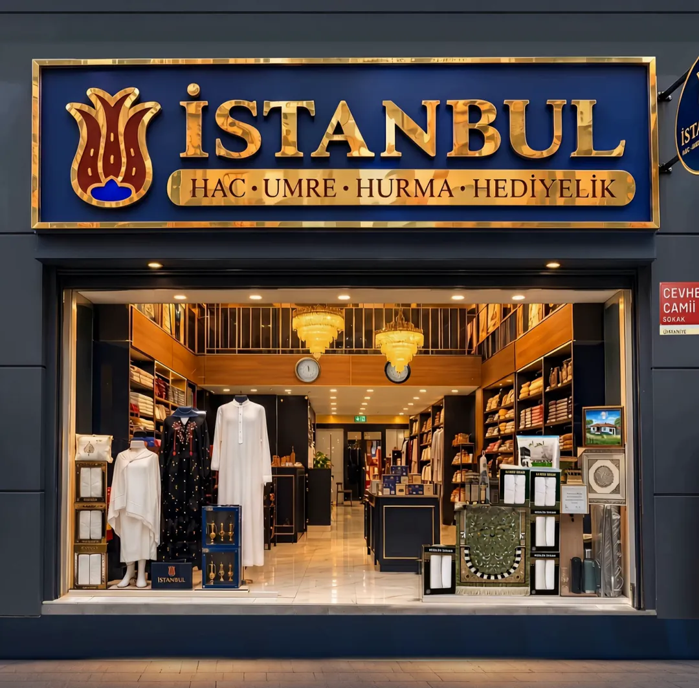

Mübarek
yolculuğun
burada.
İhramdan seccadeye, umre kıyafetlerinden Medine hurmasına kadar hac ve umre için gereken her şey, dönüşte götüreceğiniz hediyelerle birlikte Ümraniye'deki mağazamızda.
Cevherağa Camii Sk. No:10-A, ÜmraniyeYol tarifi alın

Yola çıkıştan dönüşe kadar
İstanbul Hac Umre Hediyelik olarak hac ve umreye hazırlananlara ihtiyaç duydukları ürünleri seçerek sunuyor, dönüşte sevdiklerine götürecekleri hediyelikleri özenle hazırlıyoruz. Ne alacağınızdan emin değilseniz mağazamızda listenizi birlikte gözden geçirir, eksiklerinizi tamamlarız.
Umre nasıl yapılır? dijital tur.
Hazırlıktan eve dönüşe kadar umreyi on durakta anlatan rehberimizi gezin. Her durakta o adımın ne zaman ve nasıl yapıldığını, okunacak duaları ve dikkat edilecek noktaları fotoğraflarla öğrenirsiniz. Kayıt gerekmez; rehber telefondan da rahatça takip edilir.
“Buyur Allah'ım, buyur!” İhrama girerken söylenmeye başlanan ve Mescid-i Haram'a varıncaya kadar tekrarlanan telbiyenin ilk cümlesidir.
5 üzerinden 5,0 puan. Google'da 124 yorum

Sütçü İmam Cad., Cevherağa Camii Sk. No:10-A, Ümraniye / İstanbul
Her gün 09:00–20:00 açığız.